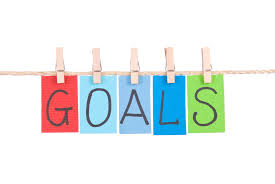

Goals
I want to become a developer oneday, an enthusiastic and tech model that other women want to follow.
I am doing many extra curriculum activities in support of the my aim.I do engage in projects and other welfare activities
because I want to lose my fears and face the ups and downs.I am certain that I would reach my tiara oneday which will make my
parents very proud of me.So I try my best to make it more than a dream.
I split my goals and plans across the various categories:
1.Finances
Find a fully flexible (probably freelancing or consultancy) job, which permits me to live in one of my units and make $25k for the year.
Rent out all my units, and make $20k from that. I expect less than $3k of expenses on my units.
Make $40k on my investments and businesses. I’ve been working very hard to shift from my full time job to (semi) passive income streams. 2017 will definitely be a big mark in this regard.
The ultimate goal is to make $85k, net $50k (a big chunk will go towards paying off my second rental property), have very low living expenses and fully flexible jobs.
2.Self-development
I hope to complete the task of re-reading 100 books, and provide summaries and reviews for all of them.
I want to hit 6.000 subscribers on my blog and 25.000 likes on my Facebook page.
I want to dominate the Portuguese fiscal code. Knowing the Italian one well, I now want to move to the Portuguese one.
I want to participate as much on Quora as in the last quarter. I definitely love Quora and I am here to stay. I will be active in the same topics.
I want to publish 3 books, but I won’t kick my ass if I can’t publish all of them during 2017. One will certainly be published mid-2017 as it has been in the works for a long while now. I would like to publish a second one till the end of the year.
Maybe get a pet.
Not letting other people affect me in a negative way. I’ve been suffering from anxiety caused by other people’s comments or actions, and this is certainly something that I want to achieve as a person.
Stop worrying (I do worry too much).
Cultivate all my friendships and create at least 10 new great relationships.
Learn a lot about renovating homes (and doing it myself). More specifically, I want to learn how to build a foundation from scratch (both with concrete and wood), apply tiles and do plumbing.
3.Health
I want to re-gain the shape I had in 2011. I was muscular and shredded and used to feel awesome every single day. Sadly, I developed CFS in the last years, but 2017 will definitely be the year in terms of improving and reversing the current situation. I will also write regularly on the status of my health.
Do one or two 7-day juice cleanse with organic juicing. I’ve located the producer, and I have everything in place to make it happen.
I plan on meditating a minimum of 15 minutes every single day of the year and follow a mostly protein, ultra clean diet.
I will finally move to my dream home, and live alone. I bought and renovated a home to a fine detail, which I want to live in, from April 2017 onwards. Maybe buying a countryside home